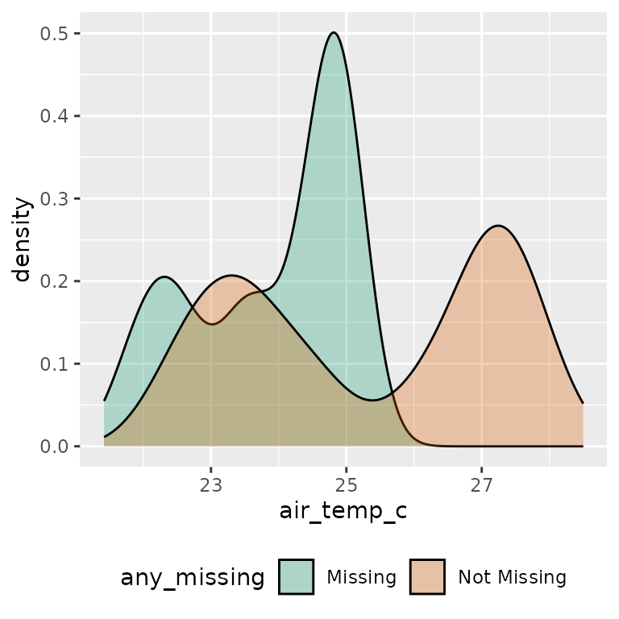
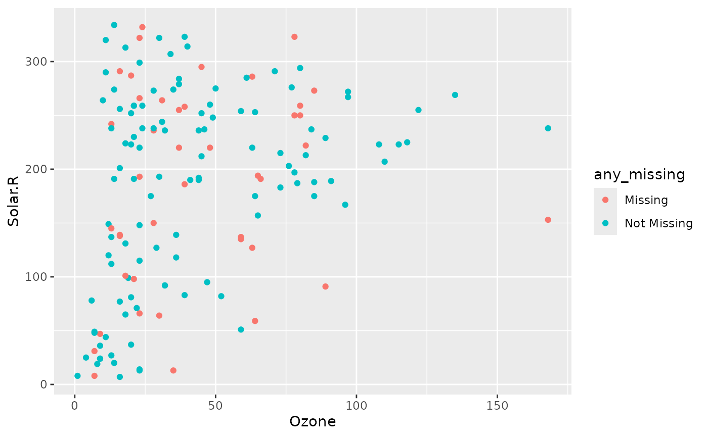

Exploring Imputed Values
Nicholas Tierney
2025-04-30
Source:vignettes/exploring-imputed-values.Rmd
exploring-imputed-values.RmdImputating missing values is an iterative process.
naniar aims to make it easier to manage imputed values by
providing the nabular data structure to simplify managing
missingness. This vignette provides some useful recipes for imputing and
exploring imputed data.
naniar implements a few imputation methods to facilitate
exploration and visualisations, which were not otherwise available:
impute_below, and impute_mean. For single
imputation, the R package simputation works very well with
naniar, and provides the main example given.
Using impute_below
impute_below imputes values below the minimum of the
data, with some noise to reduce overplotting. The amount data is imputed
below, and the amount of jitter, can be changed by changing the
arguments prop_below and jitter.
library(dplyr)
#>
#> Attaching package: 'dplyr'
#> The following objects are masked from 'package:stats':
#>
#> filter, lag
#> The following objects are masked from 'package:base':
#>
#> intersect, setdiff, setequal, union
library(naniar)
airquality %>%
impute_below_at(vars(Ozone)) %>%
select(Ozone, Solar.R) %>%
head()
#> Ozone Solar.R
#> 1 41.00000 190
#> 2 36.00000 118
#> 3 12.00000 149
#> 4 18.00000 313
#> 5 -19.72321 NA
#> 6 28.00000 NAUsing impute_mean
The mean can be imputed using impute_mean, and is useful
to explore structure in missingness, but are not recommended for use in
analysis. Similar to simputation, each impute_
function returns the data with values imputed.
Imputation functions in naniar implement “scoped
variants” for imputation: _all, _at and
_if.
This means:
-
_alloperates on all columns -
_atoperates on specific columns, and -
_ifoperates on columns that meet some condition (such asis.numericoris.character).
If the impute_ functions are used as-is - e.g.,
impute_mean, this will work on a single vector, but not a
data.frame.
Some examples for impute_mean are now given:
impute_mean(oceanbuoys$air_temp_c) %>% head()
#> [1] 27.15 27.02 27.00 26.93 26.84 26.94
impute_mean_at(oceanbuoys, .vars = vars(air_temp_c)) %>% head()
#> # A tibble: 6 × 8
#> year latitude longitude sea_temp_c air_temp_c humidity wind_ew wind_ns
#> <dbl> <dbl> <dbl> <dbl> <dbl> <dbl> <dbl> <dbl>
#> 1 1997 0 -110 27.6 27.1 79.6 -6.40 5.40
#> 2 1997 0 -110 27.5 27.0 75.8 -5.30 5.30
#> 3 1997 0 -110 27.6 27 76.5 -5.10 4.5
#> 4 1997 0 -110 27.6 26.9 76.2 -4.90 2.5
#> 5 1997 0 -110 27.6 26.8 76.4 -3.5 4.10
#> 6 1997 0 -110 27.8 26.9 76.7 -4.40 1.60
impute_mean_if(oceanbuoys, .predicate = is.integer) %>% head()
#> # A tibble: 6 × 8
#> year latitude longitude sea_temp_c air_temp_c humidity wind_ew wind_ns
#> <dbl> <dbl> <dbl> <dbl> <dbl> <dbl> <dbl> <dbl>
#> 1 1997 0 -110 27.6 27.1 79.6 -6.40 5.40
#> 2 1997 0 -110 27.5 27.0 75.8 -5.30 5.30
#> 3 1997 0 -110 27.6 27 76.5 -5.10 4.5
#> 4 1997 0 -110 27.6 26.9 76.2 -4.90 2.5
#> 5 1997 0 -110 27.6 26.8 76.4 -3.5 4.10
#> 6 1997 0 -110 27.8 26.9 76.7 -4.40 1.60
impute_mean_all(oceanbuoys) %>% head()
#> # A tibble: 6 × 8
#> year latitude longitude sea_temp_c air_temp_c humidity wind_ew wind_ns
#> <dbl> <dbl> <dbl> <dbl> <dbl> <dbl> <dbl> <dbl>
#> 1 1997 0 -110 27.6 27.1 79.6 -6.40 5.40
#> 2 1997 0 -110 27.5 27.0 75.8 -5.30 5.30
#> 3 1997 0 -110 27.6 27 76.5 -5.10 4.5
#> 4 1997 0 -110 27.6 26.9 76.2 -4.90 2.5
#> 5 1997 0 -110 27.6 26.8 76.4 -3.5 4.10
#> 6 1997 0 -110 27.8 26.9 76.7 -4.40 1.60When we impute data like this, we cannot identify where the imputed
values are - we need to track them. We can track the imputed values
using the nabular format of the data.
Track imputed values using nabular data
We can track the missing values by combining the verbs
bind_shadow, impute_,
add_label_shadow. We can then refer to missing values by
their shadow variable, _NA. The
add_label_shadow function adds an additional column called
any_missing, which tells us if any observation has a
missing value.
Imputing values using simputation
We can impute the data using the easy-to-use simputation
package, and then track the missingness using bind_shadow
and add_label_shadow:
library(simputation)
#>
#> Attaching package: 'simputation'
#> The following object is masked from 'package:naniar':
#>
#> impute_median
ocean_imp <- oceanbuoys %>%
bind_shadow() %>%
impute_lm(air_temp_c ~ wind_ew + wind_ns) %>%
impute_lm(humidity ~ wind_ew + wind_ns) %>%
impute_lm(sea_temp_c ~ wind_ew + wind_ns) %>%
add_label_shadow()We can then show the previously missing (now imputed!) data in a
scatterplot with ggplot2 by setting the color aesthetic in
ggplot to any_missing:
library(ggplot2)
ggplot(ocean_imp,
aes(x = air_temp_c,
y = humidity,
color = any_missing)) +
geom_point() +
scale_color_brewer(palette = "Dark2") +
theme(legend.position = "bottom")
Or, if you want to look at one variable, you can look at a density
plot of one variable, using fill = any_missing
ggplot(ocean_imp,
aes(x = air_temp_c,
fill = any_missing)) +
geom_density(alpha = 0.3) +
scale_fill_brewer(palette = "Dark2") +
theme(legend.position = "bottom")
ggplot(ocean_imp,
aes(x = humidity,
fill = any_missing)) +
geom_density(alpha = 0.3) +
scale_fill_brewer(palette = "Dark2") +
theme(legend.position = "bottom")
We can also compare imputed values to complete cases by grouping by
any_missing, and summarising.
ocean_imp %>%
group_by(any_missing) %>%
summarise_at(.vars = vars(air_temp_c),
.funs = list(
min = ~ min(.x, na.rm = TRUE),
mean = ~ mean(.x, na.rm = TRUE),
median = ~ median(.x, na.rm = TRUE),
max = ~ max(.x, na.rm = TRUE)
))
#> # A tibble: 2 × 5
#> any_missing min mean median max
#> <chr> <dbl> <dbl> <dbl> <dbl>
#> 1 Missing 21.4 23.9 24.4 25.2
#> 2 Not Missing 22.1 25.3 25.8 28.5Improving imputations
One thing that we notice with our imputations are that they aren’t very good - we can improve upon the imputation by including the variables year and latitude and longitude:
ocean_imp_yr <- oceanbuoys %>%
bind_shadow() %>%
impute_lm(air_temp_c ~ wind_ew + wind_ns + year + longitude + latitude) %>%
impute_lm(humidity ~ wind_ew + wind_ns + year + longitude + latitude) %>%
impute_lm(sea_temp_c ~ wind_ew + wind_ns + year + longitude + latitude) %>%
add_label_shadow()
ggplot(ocean_imp_yr,
aes(x = air_temp_c,
y = humidity,
color = any_missing)) +
geom_point() +
scale_color_brewer(palette = "Dark2") +
theme(legend.position = "bottom")
Other imputation approaches
Not all imputation packages return data in tidy
Hmisc aregImpute
We can explore using a single imputation of
Hmisc::aregImpute(), which allows for multiple imputation
with bootstrapping, additive regression, and predictive mean matching.
We are going to explore predicting mean matching, and single
imputation.
library(Hmisc)
#>
#> Attaching package: 'Hmisc'
#> The following object is masked from 'package:simputation':
#>
#> impute
#> The following objects are masked from 'package:dplyr':
#>
#> src, summarize
#> The following objects are masked from 'package:base':
#>
#> format.pval, units
aq_imp <- aregImpute(~Ozone + Temp + Wind + Solar.R,
n.impute = 1,
type = "pmm",
data = airquality)
#> Iteration 1 Iteration 2 Iteration 3 Iteration 4
aq_imp
#>
#> Multiple Imputation using Bootstrap and PMM
#>
#> aregImpute(formula = ~Ozone + Temp + Wind + Solar.R, data = airquality,
#> n.impute = 1, type = "pmm")
#>
#> n: 153 p: 4 Imputations: 1 nk: 3
#>
#> Number of NAs:
#> Ozone Temp Wind Solar.R
#> 37 0 0 7
#>
#> type d.f.
#> Ozone s 2
#> Temp s 2
#> Wind s 2
#> Solar.R s 1
#>
#> Transformation of Target Variables Forced to be Linear
#>
#> R-squares for Predicting Non-Missing Values for Each Variable
#> Using Last Imputations of Predictors
#> Ozone Solar.R
#> 0.667 0.224We are now going to get our data into nabular form, and
then insert the imputed values:
# nabular form!
aq_nab <- nabular(airquality) %>% add_label_shadow()
# insert imputed values
aq_nab$Ozone[is.na(aq_nab$Ozone)] <- aq_imp$imputed$Ozone
aq_nab$Solar.R[is.na(aq_nab$Solar.R)] <- aq_imp$imputed$Solar.RIn the future there will be a more concise way to insert these imputed values into data, but for the moment the method above is what I would recommend for single imputation.
We can then explore the imputed values like so:
ggplot(aq_nab,
aes(x = Ozone,
y = Solar.R,
colour = any_missing)) +
geom_point()